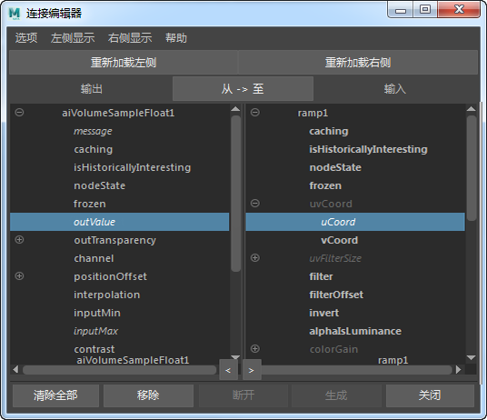

OpenVDB 工作流
在本教程中，我们将逐步介绍如何设置和使用体积采样浮点着色器来调整 OpenVDB 文件的色温效果。
有关如何从 Houdini 将体积写入 OpenVDB 的教程，请单击此处。
首先，下载 VDB 文件（如 explosion.vdb 或 fire.vbd 文件），例如从 OpenVDB 下载页面下载。
创建 Arnold 体积 -“Arnold > 体积”(Arnold > Volume)
选择“体积”(Volume)，并确保将“类型”(Type)设置为“OpenVDB”。
在“文件名”(Filename)属性下，打开 .vdb 文件。
Arnold 体积设置。“栅格”(Grids)设置为“密度”(density)。
标准体积
将 standard_volume 着色器指定给体积。
渲染场景。它的外观应如下图所示。
体积采样浮点
我们可以使用体积采样浮点着色器来控制我们的火焰体积效果的外观。此着色器将重映射 3D 体素栅格的值，方式与在 Photoshop 中将过滤器以色调映射和重映射方式映射到图像相同，只不过后者是在 2D 栅格中执行的。
- 断开 2D 纹理节点与底部附近的渐变纹理属性中的“UV 坐标”(UV Coordinates)的连接。
- 创建一个体积采样浮点着色器，然后将其拖放到“UV 坐标”(UV Coord)的 U 属性，如下图所示。
体积采样浮点着色器连接到“UV 坐标”(UV Coord)的 U 属性
- “连接编辑器”(Connection Editor)将打开。将体积采样浮点的 outValue 连接到渐变的 uCoord。

- 选择体积采样浮点着色器，并将“密度”(density)添加到“通道”(Channel)属性。

自发光(Emission)
 |
|
| 100 | 1000 |
体积采样浮点属性(Volume Sample Float Attributes)
我们可以使用体积采样浮点着色器更改火焰的外观。下面的图像显示了不同的调整属性及其对火焰体积的影响。
输入最大值(Input Max)
| 1 | 2 | 3 |
偏差(Bias)
 |
 |
|
| 0.92 | 0.95 | 0.97 |
增益(Gain)
| 0.1 | 0.2 | 0.3 |
输出最大值(Output Max)
 |
||
| 0.5 | 0.6 | 0.7 |